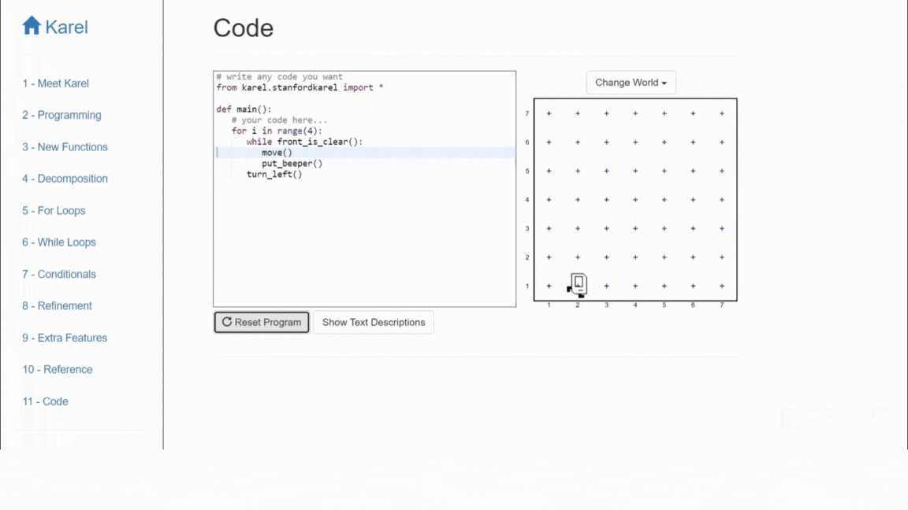

Thinking Outside the Syntax
Most of us learnt the foundations of computer programming the hard way - studying textbooks, attending old-school classrooms where we wrote programming exams on paper, and relying on YouTube videos. A few of us also learned programming through online courses. They all typically follow a similar approach of initially explaining the theory and syntax before engaging hands-on. However, universities like Stanford and Harvard employ visual platforms and intuitive drag-and-drop interfaces to teach the programming fundamentals.
I recently had the chance to volunteer as a programming instructor for a group of students with diverse programming backgrounds. The course I taught was a Stanford University initiative, called Code in Place, that focused on teaching the fundamentals of Python programming. Specifically, we covered the initial portion of their renowned CS106A - Programming Methodologies course. The curriculum began by introducing a visual platform named Karel. Essentially, it is a grid-based canvas where Karel, the robot, can navigate, and place and pick up objects. Karel can be controlled using functions which are already defined in the platform.
To be honest, upon learning about this unconventional (compared to what I have experienced so far) approach, I was skeptical. I had doubts about how utilizing a no/low-code platform could effectively facilitate the learning of programming concepts. However, as the program progressed, I came to realize that these platforms actually assist students in developing a solid grasp of programming fundamentals without delving into the complexities of syntax and statements. Visual aids provided by such platforms make it easier and more intuitive to teach concepts like looping, especially when accompanied by a well-designed curriculum.
Below is a basic project I created using Karel aimed at creating an outline for the canvas by placing beepers (blue rotated squares) along the walls. This task serves as a useful tool for understanding the concept of loops in Python.

As you can observe, the code on the left is concise and does not include the specific details of the context. Codes to move, to place beeper and to turn left are already defined for you. All you need to do is make the appropriate function calls. This approach allows students to concentrate on the core topic at hand, which in this case is loops. Additionally, as the Karel performs an action, the line of code corresponding to it is also highlighted, which helps the student identify the flow of control.
Scratch, developed by MIT, is another platform that anyone with zero programming knowledge can take advantage of. It is more advanced than Karel in terms of customisability and the potential to develop advanced projects, at the same time being a completely no-code platform. While built-in code snippets can be used by function calls in Karel, Scratch lets you to simply drag and drop the functions, like pieces of a puzzle.
As an example, I recently tried recreating the iconic egg catching computer game on Scratch. Click the green flag below to start the game. Use left and right arrow keys on the keyboard to move the basket, catch the eggs and avoid the poop. You can see the details and the 'code' here. It was built as part of a submission to Harvard’s CS50 course.
Programming has become an almost indispensable skill, and while learning it through traditional means is not incorrect, it can be more challenging. As we need to work smarter rather than harder inorder to catch up with the fast-paced field of research and technology, platforms such as Karel and Scratch can prove to be immensely valuable to speed up our learning process.
Relevant links:
CS50's Introduction to Computer Science from Harvard via edX
Date published: 17th June, 2023
Date modified: 17th June, 2023
Tags
programming
Python